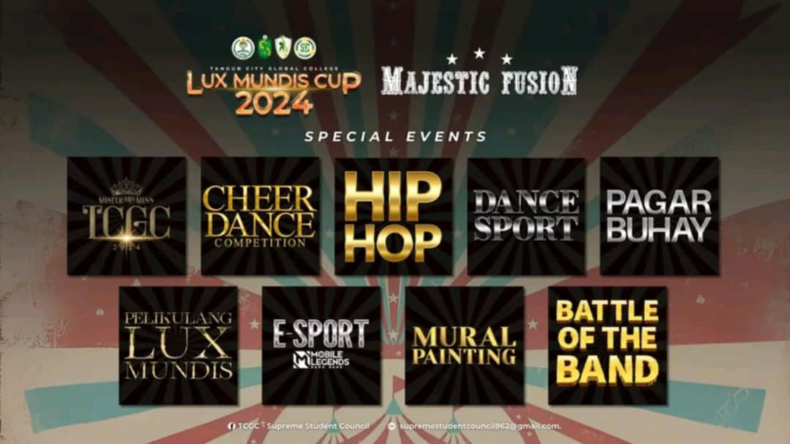
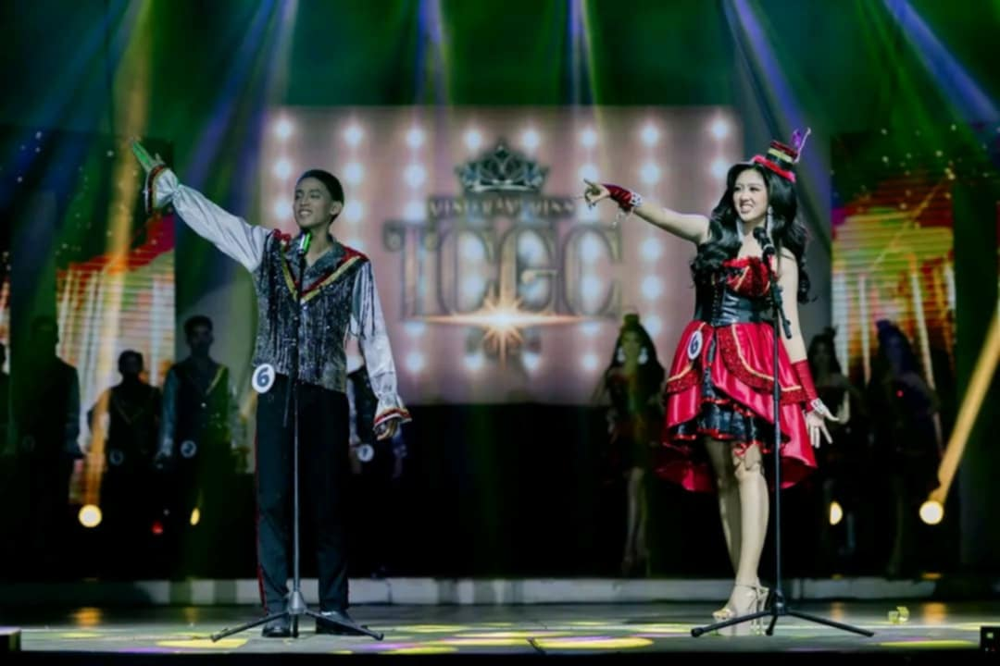
 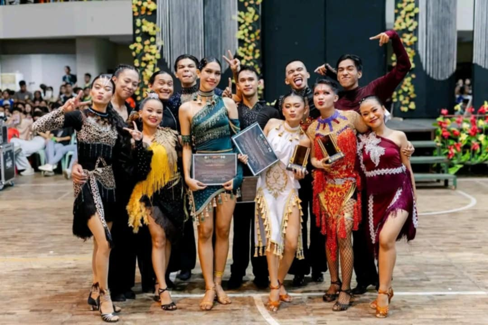
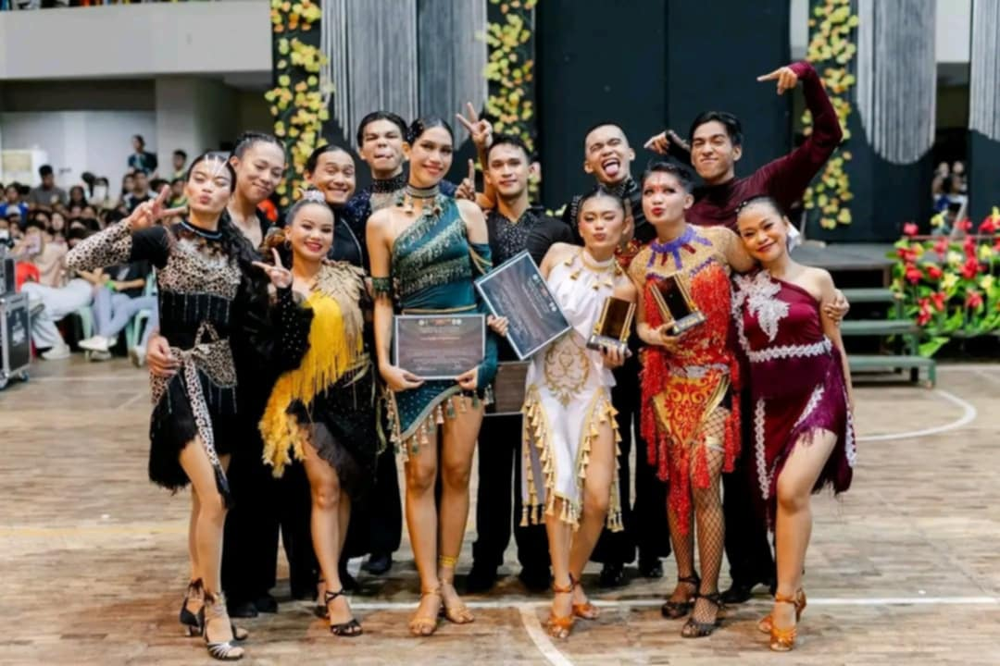


 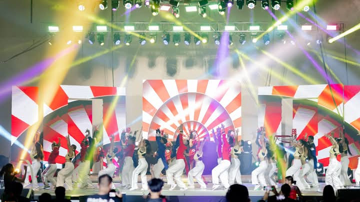
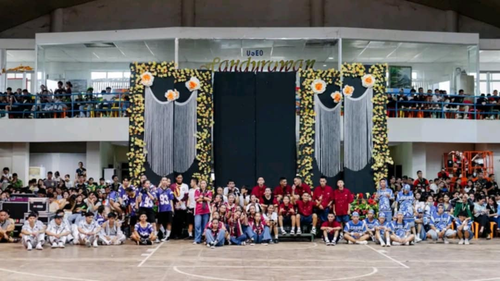
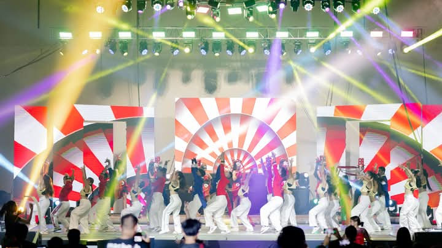
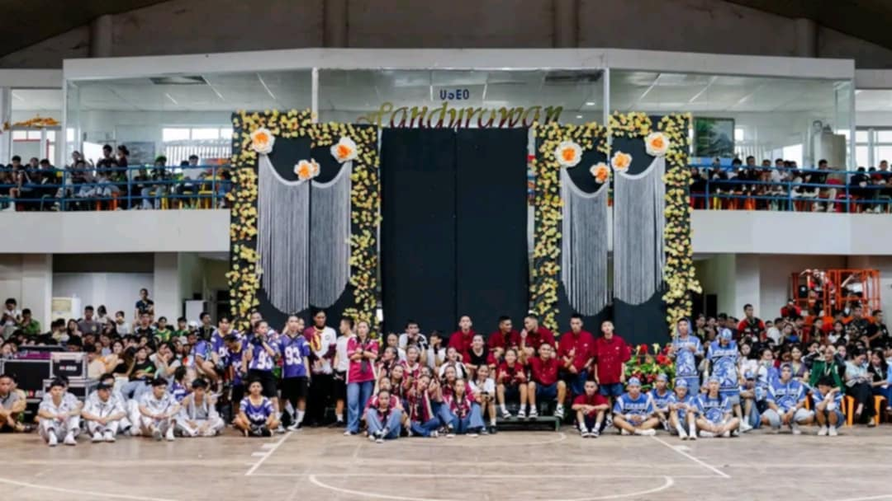
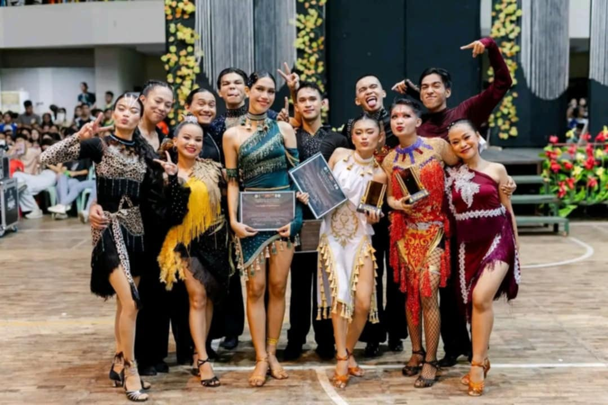
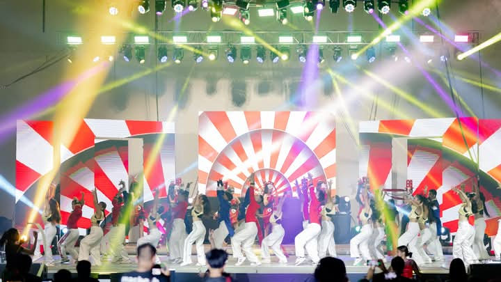
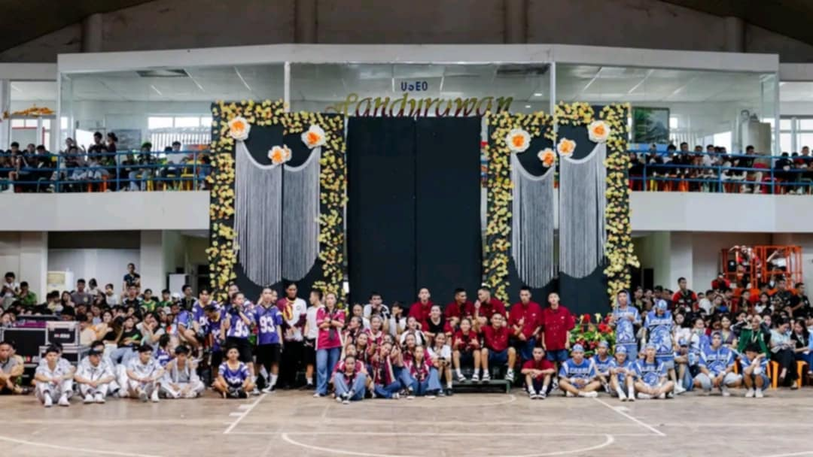
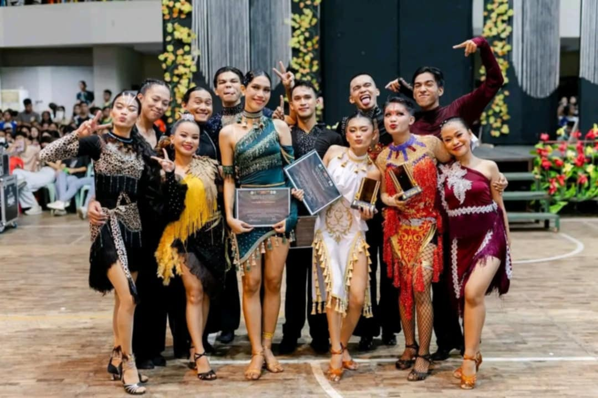
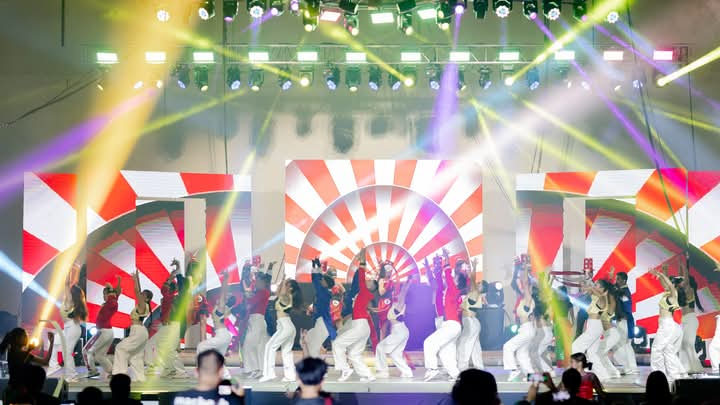
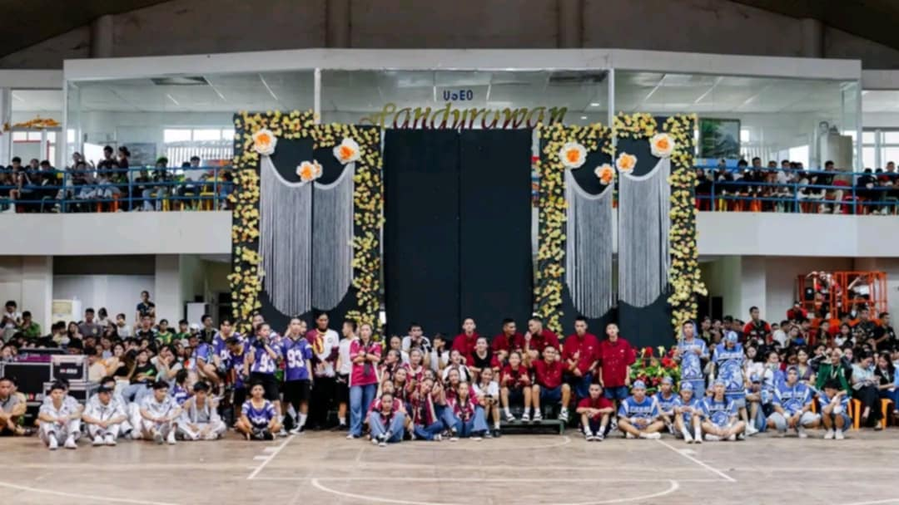
The Lux Mundi Cup at Tangub City Global College is an annual event that embodies the spirit of competition, camaraderie, and excellence among students. The name "Lux Mundi," which translates to "Light of the World," reflects the institution's mission to foster holistic development, illuminate talent, and inspire leadership in its students. This prestigious event brings together individuals and teams to showcase their skills, abilities, and creativity across various activities, promoting a culture of healthy competition and community building.
The LUX MUNDIS CUP 2024 is a big event at Tangub City College where students from the school get together for five days of fun and learning.
It's like a big school festival with lots of activities!
They have competitions where students can show off their hidden abilities, showing their strengths not only on academics but also physical activities.
This year's event is themed "Majestic Fusion" bringing fun for every student to witness.
The main goal is to help students learn new things, make friends, and feel proud of their school.
The Lux Mundi Cup was the biggest event of the year at our school! It felt like everyone was buzzing with excitement.
The opening ceremony was incredible. The stage was decorated with colorful lights and banners, and there were so many performances.
The music was loud, and everyone was cheering. It was like a big party, and it was so cool to see everyone from our school come together.
It felt like the whole week was going to be amazing!
I wanted to join on playing sports and I have so many sports to join onto but I decided to join the athletics. I waa veey nervous at first because I dont know anyone in the athletics team. But I encourage my classmate to join because they said are not participating in the LMC. They eventually joined and we always train everyday for the competition.
I was lucky to be on a team with some really great people. We worked together, practiced hard, and even though some of us didn't win, we still had a lot of fun.
We learned so much, and I'm glad I got to be part of it.
The closing ceremony was a bit of a bummer. It started raining really hard, and then the lights went out.
I was looking forward to the last performances and the awards ceremony, but the rain just kept coming.
It was a little disappointing, but it didn't ruin the whole week. We had so much fun with the opening ceremony, the sports and special events, and all the other activities.
The Lux Mundi Cup was a great experience, and I'm already looking forward to next year.